Laporan Praktikum Aplikasi Mobile: Pengenalan Widgets serta Layouting & Styling
1. Pendahuluan
Praktikum kedua Aplikasi Mobile ini terdiri atas dua modul yang saling berkelanjutan, yaitu Pengenalan Widgets serta Layouting & Styling pada Flutter. Modul pertama membahas dasar-dasar pembangunan antarmuka melalui perbedaan StatelessWidget yang tampilannya statis dan StatefulWidget yang mampu merender ulang dirinya melalui fungsi setState() ketika terjadi perubahan data. Modul kedua melanjutkan pembahasan dengan menerapkan widget tata letak seperti Row, Column, Container, dan ListTile untuk menyusun komponen antarmuka yang lebih kompleks, seperti deretan tombol aksi dan daftar riwayat transaksi, hingga akhirnya seluruh komponen digabungkan menjadi satu dashboard yang dapat digulir menggunakan SingleChildScrollView.
Tujuan Praktikum:
- Mahasiswa mampu membedakan penggunaan StatelessWidget dan StatefulWidget dalam pengembangan aplikasi Flutter.
- Mahasiswa mampu menerapkan fungsi setState() untuk membangun antarmuka yang interaktif.
- Mahasiswa mampu menerapkan widget Row dan Column untuk menyusun tata letak antarmuka secara horizontal maupun vertikal.
- Mahasiswa mampu menggunakan widget Container dan ListTile untuk membangun tampilan daftar yang rapi dan konsisten.
- Mahasiswa mampu menggabungkan seluruh komponen ke dalam satu halaman dashboard yang dapat digulir.
2. Modul 1: Pengenalan Widgets, Stateless, Stateful & Manajemen State Dasar
A. Membuat Widget Sapaan (Stateless)
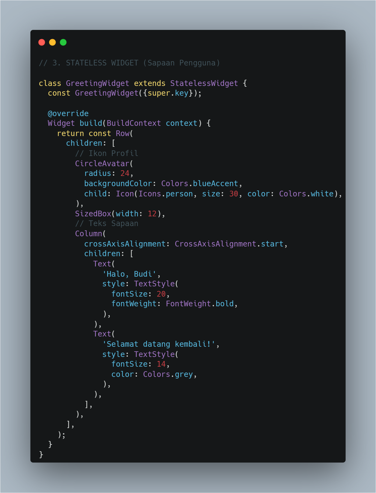
Kode Program: GreetingWidget (StatelessWidget)Dibuat GreetingWidget yang diturunkan dari StatelessWidget karena tampilan sapaan bersifat statis dan tidak memiliki data yang berubah setelah dirender. Widget Row digunakan untuk menyusun CircleAvatar berwarna biru berisi ikon person di sisi kiri, diikuti SizedBox sebagai jarak, lalu Column dengan crossAxisAlignment.start yang menumpuk dua Text, yaitu "Halo, Budi" dengan gaya tebal ukuran 20 dan "Selamat datang kembali!" berwarna abu-abu berukuran lebih kecil.
B. Membuat Kartu Saldo (Stateful)
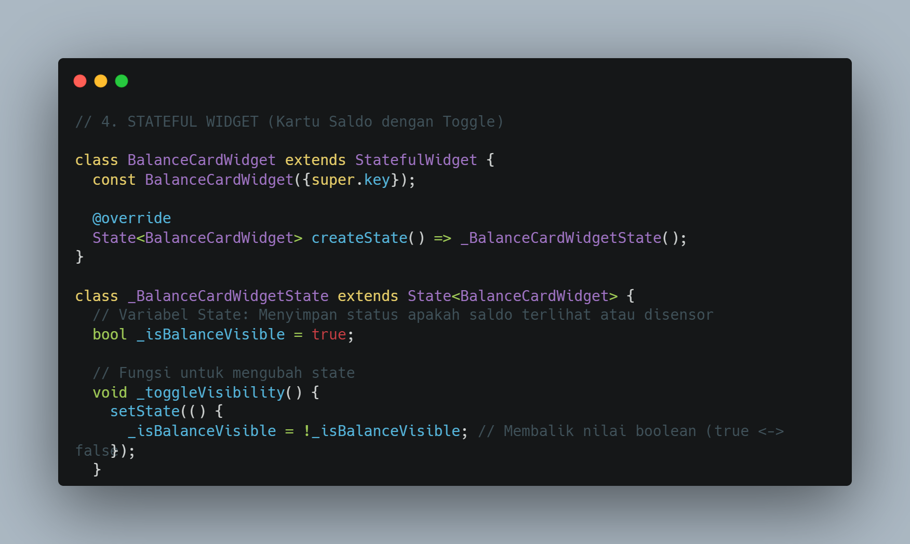
Kode Program: Struktur BalanceCardWidget (StatefulWidget)Berbeda dari GreetingWidget, kartu saldo harus dapat bereaksi saat ikon mata ditekan sehingga dibuat sebagai StatefulWidget bernama BalanceCardWidget, dengan createState() mengembalikan _BalanceCardWidgetState. Pada class state tersebut dideklarasikan variabel _isBalanceVisible bertipe bool (default true) untuk menandai status visibilitas saldo, serta variabel _balance bertipe String final yang menampung nilai nominal "Rp 5.000.000".
C. Menerapkan Interaktivitas (setState)
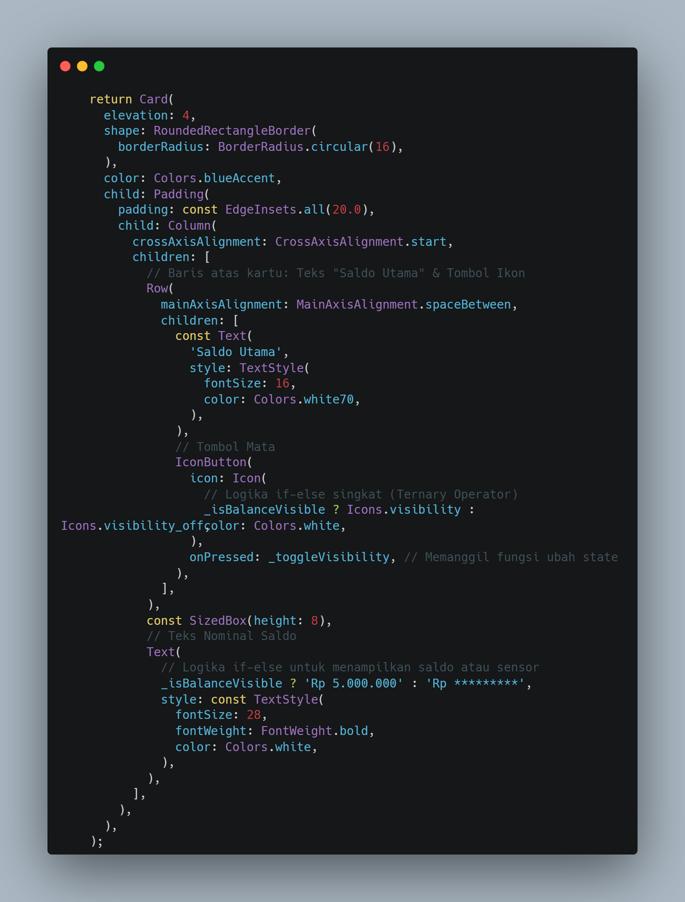
Kode Program: Implementasi setState pada BalanceCardWidgetMethod build mengembalikan Card berwarna biru dengan sudut membulat, berisi Row spaceBetween yang menampilkan teks "Saldo Utama" beserta IconButton. Ikon pada tombol tersebut berganti antara Icons.visibility dan Icons.visibility_off menggunakan ternary berdasarkan nilai _isBalanceVisible, sementara Text nominal saldo juga berganti antara angka asli dan tanda sensor. Setiap kali IconButton ditekan, method _toggleVisibility memanggil setState() untuk membalik nilai boolean, sehingga Flutter merender ulang kartu dengan kondisi tampilan yang baru.
Hasil Akhir Modul 1
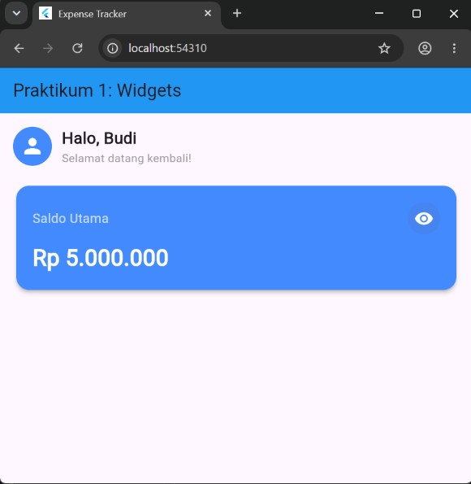
Hasil Akhir Modul 1: Tampilan Sapaan dan Kartu SaldoSetelah GreetingWidget dan BalanceCardWidget digabungkan ke dalam Scaffold utama melalui Padding dan Column, halaman menampilkan sapaan statis di bagian atas beserta CircleAvatar pengguna, diikuti kartu saldo berwarna biru di bawahnya. Ikon mata pada kartu dapat ditekan untuk menyembunyikan atau menampilkan kembali nominal saldo secara dinamis tanpa perlu memuat ulang halaman.
Tugas/Latihan Modul 1
Tugas 1: Mengubah Tema Warna BalanceCard
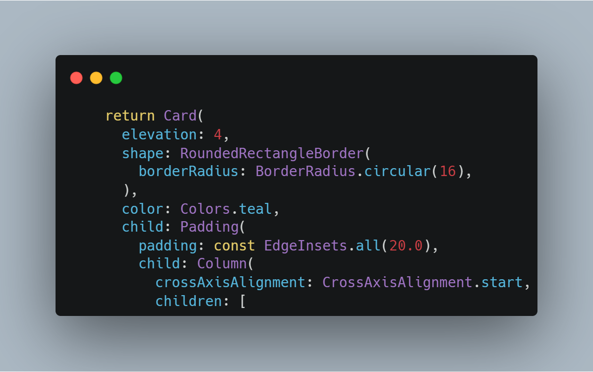
Kode Program: Perubahan Warna BalanceCard menjadi Colors.tealSesuai instruksi tugas, properti color pada widget Card di dalam BalanceCardWidget diubah dari Colors.blueAccent menjadi Colors.teal, sehingga kartu saldo tampil dengan nuansa hijau emerald menggantikan warna biru sebelumnya.
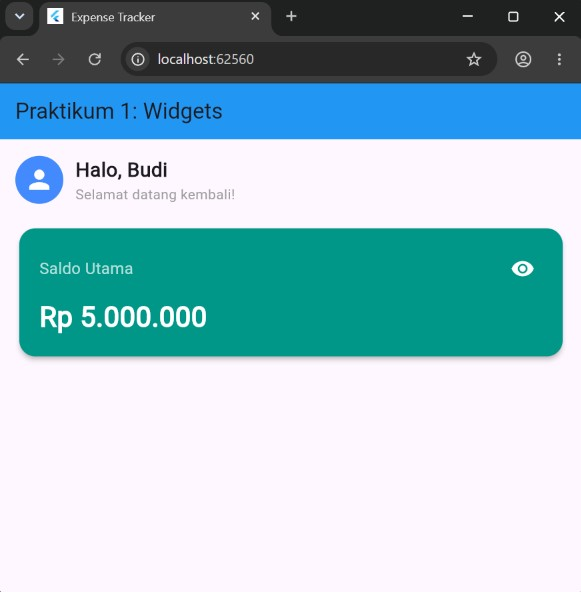
Hasil Tampilan Tugas 1: Kartu Saldo Warna TealTampilan yang diharapkan menunjukkan kartu saldo dengan warna dasar hijau emerald menggantikan warna biru, sementara seluruh fungsi interaktivitas menampilkan dan menyembunyikan saldo tetap berjalan seperti semula.
Tugas 2: Menambahkan Nomor Rekening
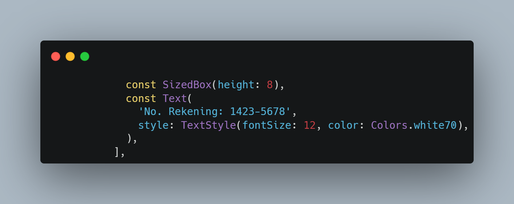
Kode Program: Penambahan Teks No. Rekening pada BalanceCardDi bawah Text nominal saldo ditambahkan SizedBox sebagai jarak vertikal, diikuti sebuah Text statis baru bertuliskan "No. Rekening: 1423-5678" dengan warna putih transparan dan ukuran huruf yang lebih kecil agar tidak mendominasi tampilan kartu.
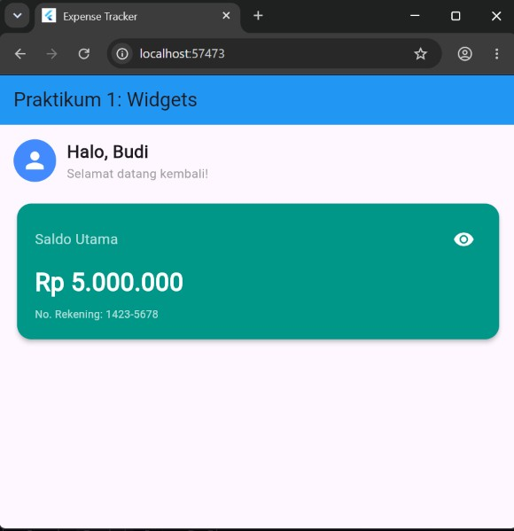
Hasil Tampilan Tugas 2: Kartu Saldo dengan Nomor RekeningTampilan yang diharapkan menunjukkan baris teks nomor rekening muncul tepat di bawah nominal saldo pada kartu, melengkapi informasi yang ditampilkan tanpa mengubah fungsi toggle visibilitas saldo yang sudah ada.
3. Modul 2: Layouting & Styling ; Row, Column, Container, dan ListTile
A. Menyusun Tombol Aksi (Row)
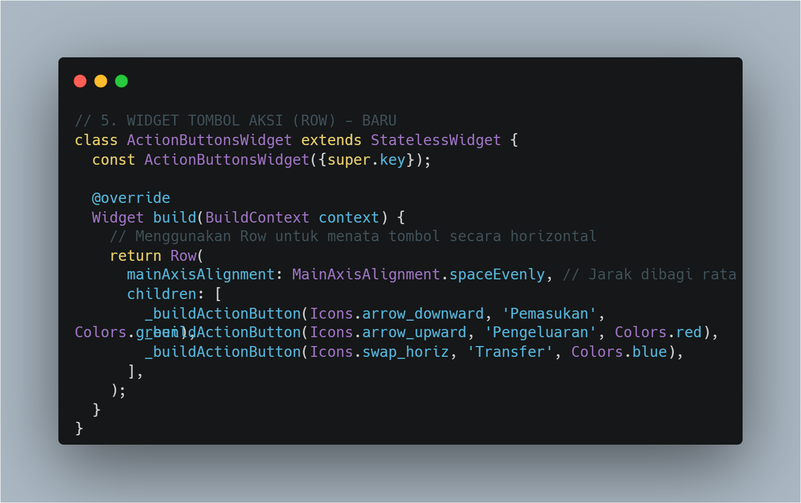
Kode Program: ActionButtonsWidget (Row)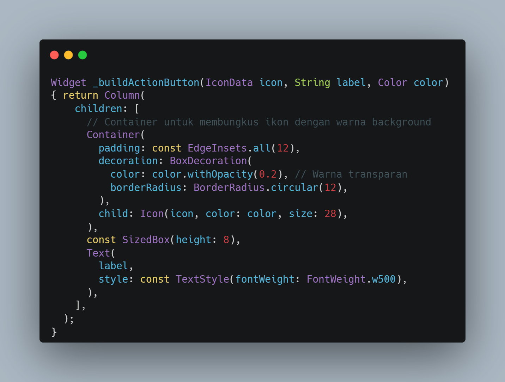
Kode Program: ActionButtonsWidget (Row)ActionButtonsWidget menggunakan Row dengan mainAxisAlignment.spaceEvenly agar jarak antar tombol terbagi rata. Tiga tombol aksi, yaitu Pemasukan, Pengeluaran, dan Transfer, dibangun melalui method pembantu _buildActionButton yang mengembalikan Column berisi Container pembungkus ikon dengan padding, warna latar transparan 20% dari warna asli, dan sudut membulat, diikuti SizedBox serta Text label di bawah ikon.
B. Menyusun Riwayat (Column + ListTile)
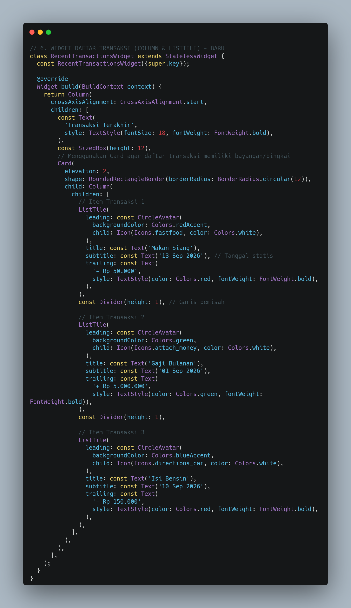
Kode Program: RecentTransactionsWidget (Column + ListTile)RecentTransactionsWidget menyusun judul "Transaksi Terakhir" di atas sebuah Card berisi Column yang menumpuk beberapa ListTile secara berturut-turut, dipisahkan oleh Divider di antaranya. Setiap ListTile memiliki leading berupa CircleAvatar dengan ikon sesuai kategori transaksi, title berisi nama transaksi, subtitle berupa tanggal, dan trailing berupa Text nominal yang diwarnai merah untuk transaksi pengeluaran dan hijau untuk transaksi pemasukan.
C. Integrasi Dashboard (Scrollable)
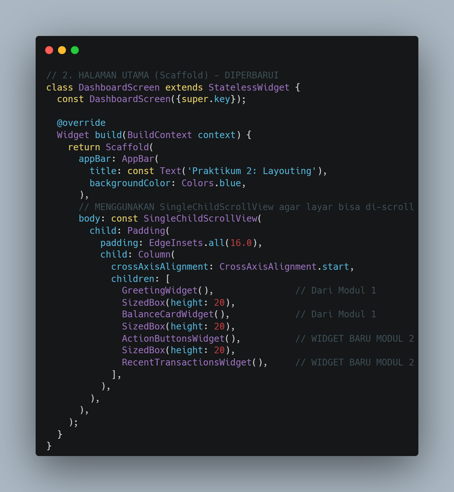
Kode Program: Integrasi SingleChildScrollView pada DashboardScreenSeluruh widget dari Modul 1 (GreetingWidget, BalanceCardWidget) dan Modul 2 (ActionButtonsWidget, RecentTransactionsWidget) digabungkan ke dalam satu Column dengan jarak antarwidget diatur menggunakan SizedBox, lalu Column tersebut dibungkus dengan Padding dan SingleChildScrollView agar halaman tetap dapat digulir dan terhindar dari overflow ketika daftar transaksi bertambah panjang.
Hasil Akhir Modul 2
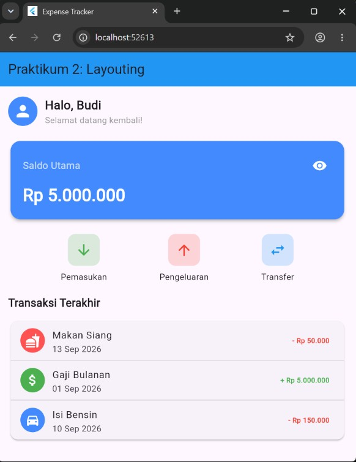
Hasil Akhir Modul 2: Mockup DashboardDashboard yang dihasilkan menampilkan sapaan dan kartu saldo dari Modul 1 di bagian atas, diikuti tiga tombol aksi yang tersusun sejajar secara horizontal, dan daftar Transaksi Terakhir di bagian bawah lengkap dengan warna nominal sesuai jenis transaksinya. Seluruh komponen tersusun rapi dalam satu halaman yang dapat digulir.
Tugas/Latihan Modul 2
Tugas 1: Styling Warna Trailing Text
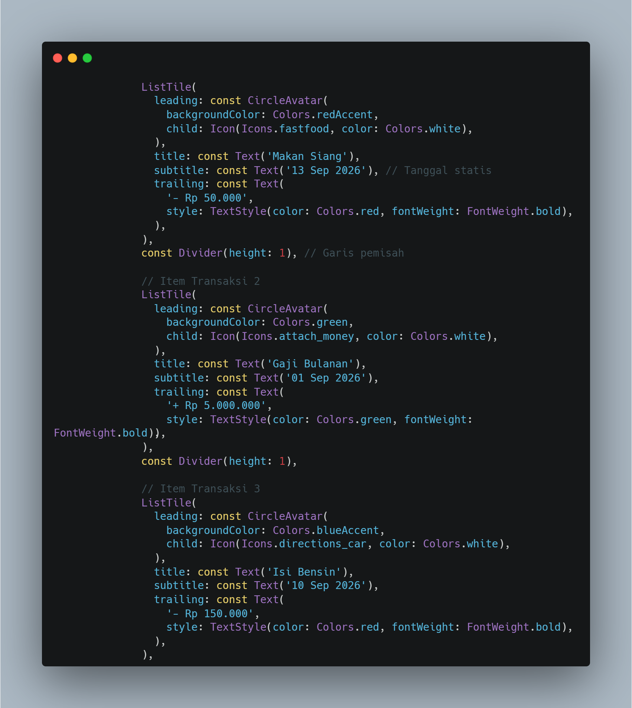
Kode Program: Pewarnaan Trailing Text pada ListTileSetiap Text pada properti trailing ListTile diberi TextStyle dengan color eksplisit, yaitu Colors.red untuk transaksi bertipe pengeluaran dan Colors.green untuk transaksi bertipe pemasukan, sehingga jenis transaksi dapat dikenali langsung dari warna nominal tanpa perlu membaca judulnya.
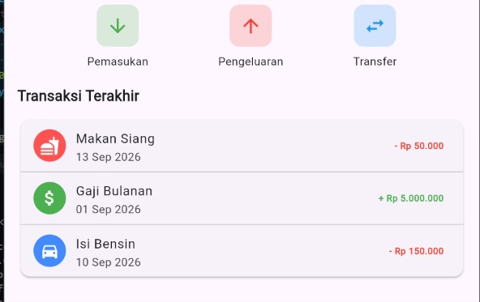
Hasil Tampilan Tugas 1: Warna Trailing Text TransaksiTampilan yang diharapkan menunjukkan nominal transaksi pengeluaran berwarna merah dan nominal transaksi pemasukan berwarna hijau pada setiap ListTile di daftar Transaksi Terakhir.
Tugas 2: Menambahkan Transaksi Baru
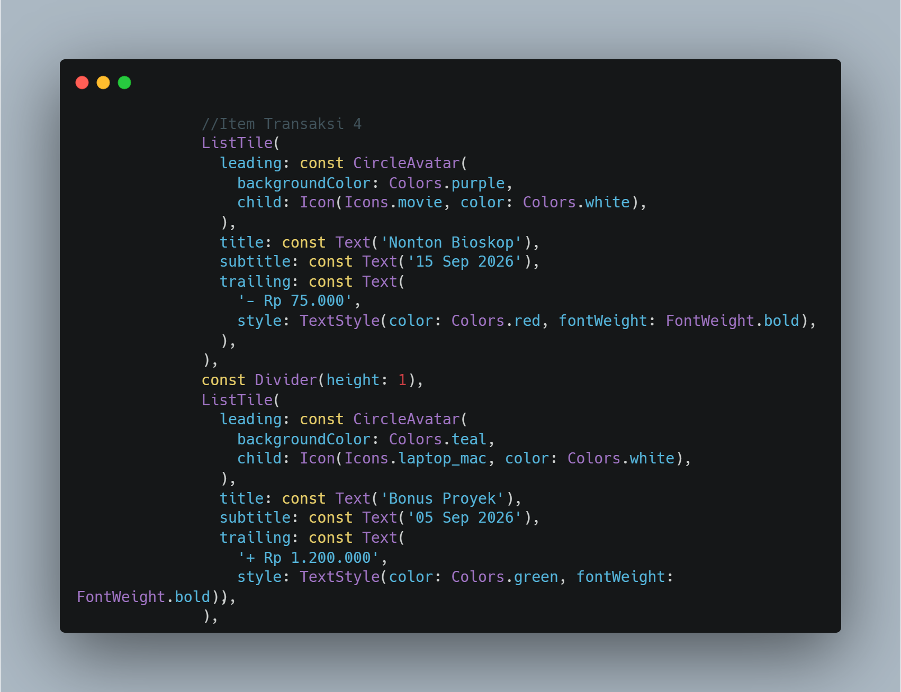
Kode Program: Penambahan Dua ListTile Transaksi BaruDua ListTile baru beserta Divider pemisahnya ditambahkan setelah item transaksi yang sudah ada di dalam Column milik Card, masing-masing dengan leading ikon, title, subtitle tanggal, dan trailing nominal sesuai jenis transaksi fiktif yang dipilih.
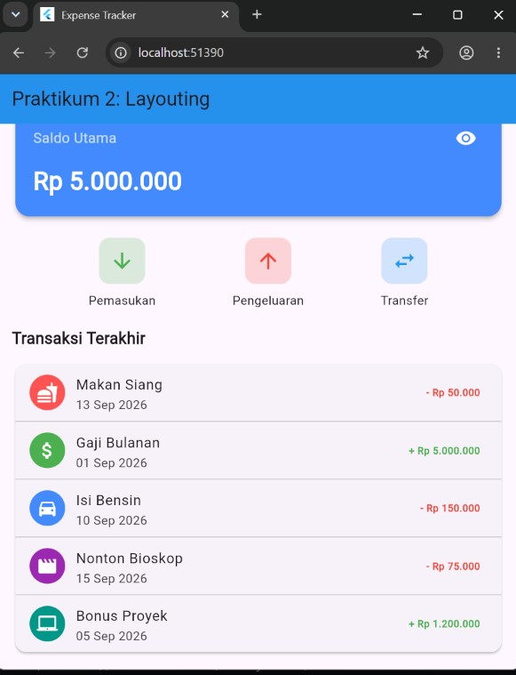
Hasil Tampilan Tugas 2: Daftar Transaksi dengan Data BaruTampilan yang diharapkan menunjukkan daftar Transaksi Terakhir bertambah menjadi lima item, dengan dua transaksi baru mengikuti pola tampilan dan pewarnaan yang sama seperti transaksi sebelumnya.
4. Kesimpulan
Berdasarkan praktikum yang telah dilakukan, dapat disimpulkan bahwa Flutter menyediakan StatelessWidget untuk komponen yang tampilannya statis serta StatefulWidget yang dilengkapi setState() untuk komponen yang perlu merespons interaksi pengguna secara dinamis. Lebih lanjut, kombinasi widget tata letak seperti Row untuk susunan horizontal, Column untuk susunan vertikal, Container untuk pengaturan padding dan warna, serta ListTile untuk baris daftar yang rapi, memungkinkan pembangunan antarmuka yang kompleks seperti dashboard keuangan. Pembungkusan seluruh komponen dengan SingleChildScrollView juga terbukti penting untuk menjaga tampilan tetap dapat digulir dan terhindar dari overflow ketika jumlah data bertambah.